02.7 祝昔的载具 Mod 开发总结 Vehicle Modding Notes by 祝昔
作者：@情绪薫
Author: @情绪薫
PW 模组制作中可能遇到的问题
Problems you may run into when making mods for PW
首先模型获取途径 Where to Get Models
第一个Sketchfab - The best 3D viewer on the web，上面有着大量模型，包括付费以及免费模型
First, Sketchfab - The best 3D viewer on the web. It hosts a large number of models, both paid and free.
第二个游戏中的载具模型 (gamemodels3d.com),上面有WT，WOT，WOTB，AW的大量模型，并且大部分WT模型都包含内构，需要付费注册账号来下载模型
Second, 游戏中的载具模型 (gamemodels3d.com). It has a large number of models from WT, WOT, WOTB and AW, and most WT models include internal structure. You need a paid account to download the models.
第三个CGTrader - 3D Models for VR / AR and CG projects，上面有着大量付费模型
Third, CGTrader - 3D Models for VR / AR and CG projects. It has a large number of paid models.
第四个其他。
Fourth, other sources.
接下来分为制作模组中遇到的问题以及制作更好的模组遇到的问题两个方面
The rest is divided into two parts: problems encountered while making a mod and problems encountered while making a better mod.
制作模组中遇到的问题 Problems Encountered While Making a Mod
- 模型原点的确定 Determining the model origin
- 无炮塔坦歼 Turretless tank destroyers
- 模组制作了内构但游戏里不显示 The mod has internal structure but it does not show up in game
- 在编辑过程中突然看不到hitbox The hitbox suddenly disappears while editing
- 坦克在车库中起飞翻转 The tank takes off and flips over in the garage
- 炮弹击中后产生的贴图过大 The decal produced when a shell hits is too large
- 模组在游戏内不显示 The mod does not show up in game
制作更好的模组遇到的问题 Problems Encountered While Making a Better Mod
- 动画 Animation
- 实体履带 Solid tracks
- 不同方向炮塔不同俯仰角 Different elevation angles in different turret directions
- 如何给模组设置缩略图 How to set a thumbnail for a mod
- 如何设置爆反装甲 How to set up reactive armor
- 模组查看装甲时部分装甲透明 Some armor is transparent when viewing armor in a mod
- 去除内构模型颜色 Removing the colors from internal structure models
- 给模型起名字 Naming the model
- 多边形炮管变圆 Making a faceted gun barrel look round
- 多炮塔例子 A multi-turret example
- 配对节点和重力节点 Pairing nodes and gravity nodes
- 如何解决模组启动停止时的猛烈磕头 How to fix violent nose-diving when the mod starts and stops
一、在制作模组中遇到的问题 Part 1: Problems Encountered While Making a Mod
1. 模型原点的确定 Determining the Model Origin
在blender中，你需要对以下部件设置原点
In Blender you need to set the origin for the following parts.
炮塔turret,设置炮塔原点以确保炮塔绕轴进行水平转动。
Turret: set the turret origin so that the turret rotates horizontally around its axis.
（先点击左侧工具栏中的移动然后勾选右上角的原点，父级，然后就可以将物体原点移动到你想要的地方，完成后记得取消勾选原点和父级）
(First click Move in the left toolbar, then tick Origin and Parent in the top right. You can then move the object origin wherever you want. Remember to untick Origin and Parent when you are done.)
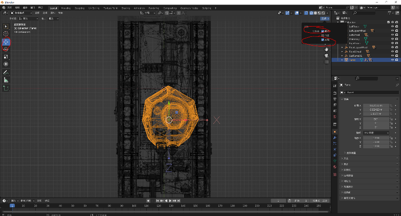
炮盾Gun，将设置炮盾原点以确保坦克炮管俯仰正常
Gun mantlet (Gun): set the mantlet origin so that the tank's gun barrel elevates and depresses correctly.
炮管Dym，设置炮管原点来确保炮弹发射位置正确
Gun barrel (Dym): set the barrel origin so that shells are fired from the correct position.
轮子UpperWheel以及Wheel，右键设置原点在质心体积来确保轮子绕轴旋转
Wheels (UpperWheel and Wheel): right-click and set the origin to center of mass (volume) so that the wheels rotate around their axis.
2. 无炮塔坦歼 Turretless Tank Destroyers
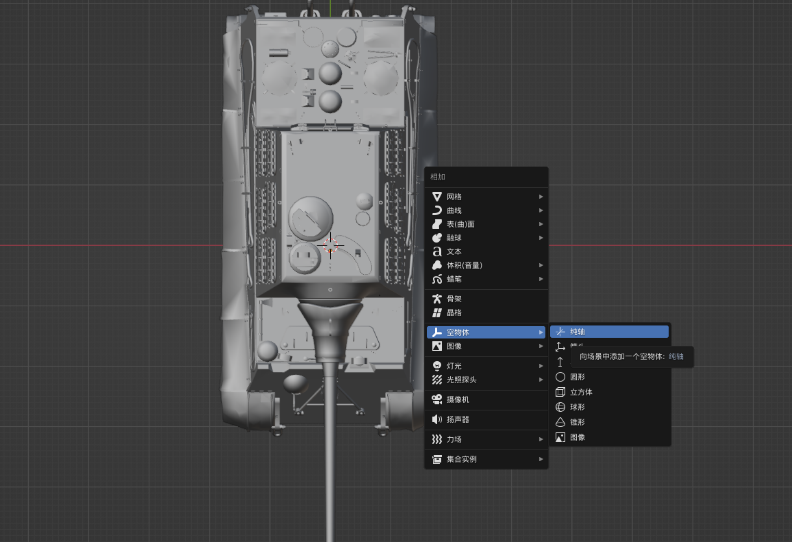
对于无炮塔坦歼如猎虎，在blender中按shift+a，创建一个空轴来作为其炮塔，按g来移动空轴原点。
For turretless tank destroyers such as the Jagdtiger, press shift+a in Blender to create an empty that acts as the turret, and press g to move the empty's origin.
3. 模组制作了内构但游戏里不显示 The Mod Has Internal Structure but It Does Not Show up in Game
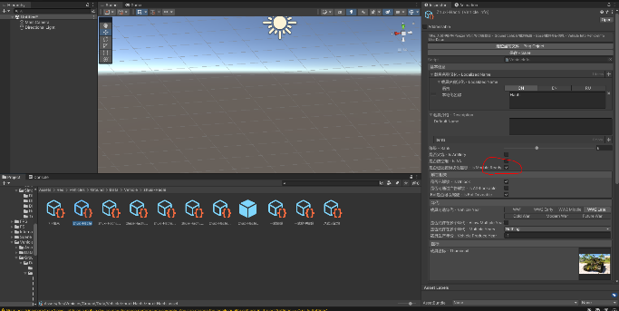
查看是否勾选配置模块化信息
Check whether Is Module Ready is ticked.
4. 在编辑过程中突然看不到hitbox The Hitbox Suddenly Disappears While Editing
查看hitbox是否隐藏
Check whether the hitbox is hidden.
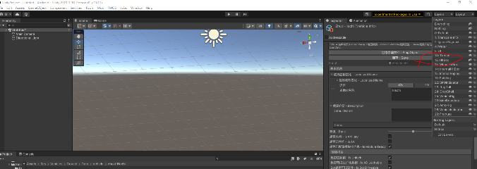
5. 坦克在车库中起飞翻转 The Tank Takes off and Flips over in the Garage
查看是否设置坦克质量
Check whether you have set the tank's mass.
6. 炮弹击中后产生的贴图过大 The Decal Produced When a Shell Hits Is Too Large
查看炮弹口径是否填写出错
Check whether the shell caliber has been entered incorrectly.
7. 模组在游戏内不显示 The Mod Does Not Show up in Game
查看是否有音效未填
Check whether any sound effect fields have been left empty.
二、如何制作更好的模组 Part 2: How to Make a Better Mod
1. 动画 Animation
举例某些坦克上有旋转的雷达
For example, some tanks have a rotating radar.
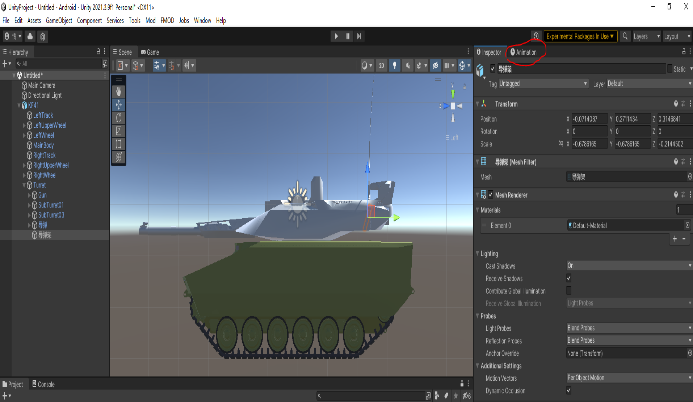

如图在合适的位置创建一个空轴来保证雷达绕此轴旋转，然后将雷达放入空轴中，将空轴移动到炮塔下
As shown in the pictures, create an empty at a suitable position so that the radar rotates around that axis, then put the radar inside the empty and move the empty under the turret.
接着在unity中将物体拖入左侧栏中，选中该物体的雷达部件，右侧选择animation，animation制作教程可参照下面的视频
Then in Unity, drag the object into the left panel, select the radar part of that object, and choose Animation on the right. For an animation tutorial, refer to the video below.
制作完后需要将animator勾选（没有则需要在下方add component选择animator）
When you are done you need to tick Animator (if there is none, use Add Component at the bottom to add an Animator).
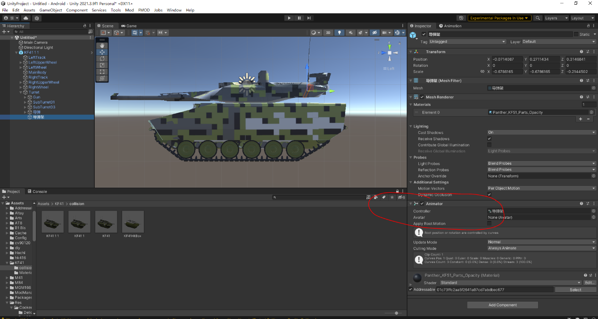
最后模型上好贴图并设置碰撞体积放入collision文件夹中保存即可。
Finally, apply the textures to the model, set up the collision volumes, place them in the collision folder and save.
2. 实体履带 Solid Tracks
将履带块模型分离出来后，右键设置原点在质心（体积），接着右键吸附-选中项-游标，将模型角度调整如下，然后ctrl+a应用旋转，保存即可
After separating out the track link model, right-click and set the origin to center of mass (volume). Then right-click Snap - Selection to Cursor, adjust the model angle as shown below, press ctrl+a to apply the rotation, and save.
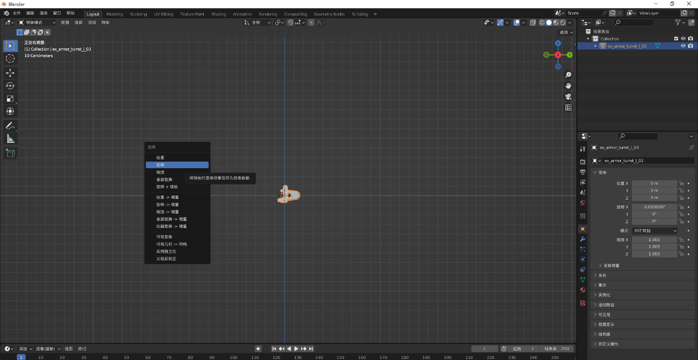
注意，当你需要设置左右两侧履带模型时，左履带模型需在上图基础上顺时针转动180度后再应用旋转
Note: when you need to set up track models for both the left and right sides, the left track model has to be rotated 180 degrees clockwise from the state shown above before you apply the rotation.
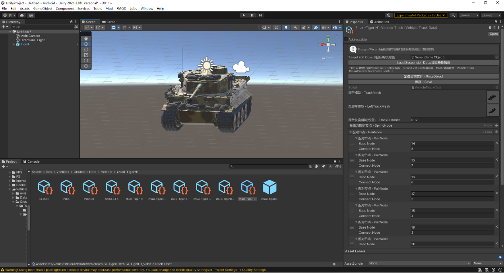
3. 不同方向炮塔不同俯仰角 Different Elevation Angles in Different Turret Directions
大部分坦克在不同方向的俯仰角不同，可以在特殊的俯仰角位置中进行设置
Most tanks have different gun elevation limits depending on the direction. You can configure this in the special elevation angle section.
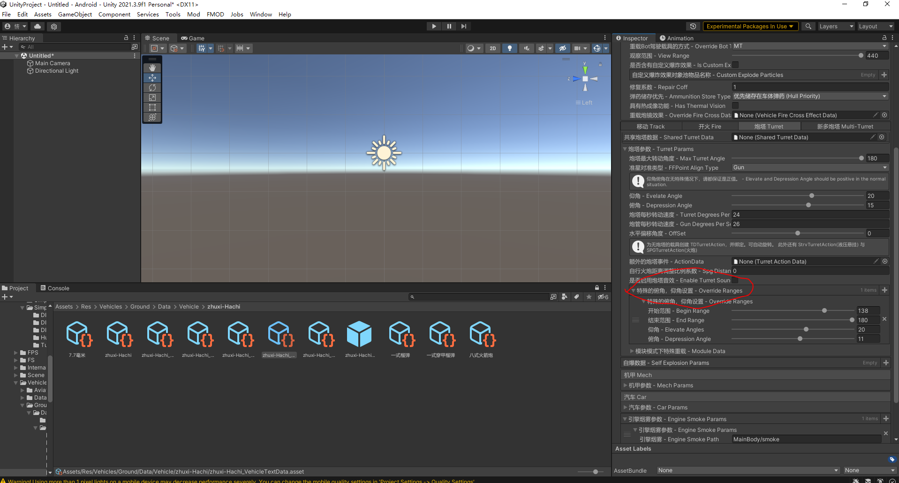
4. 如何给模组设置缩略图 How to Set a Thumbnail for a Mod
将你的图片放入编辑器后，右侧设置选择sprite和single，再点击下方的apply即可
After importing your image into the editor, choose Sprite and Single in the settings on the right, then click Apply at the bottom.
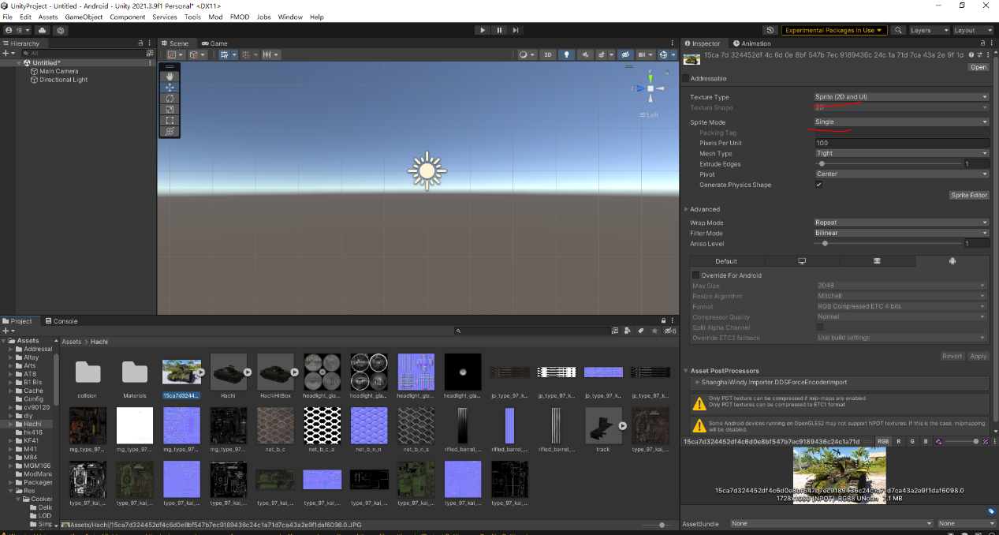
5. 如何设置爆反装甲 How to Set up Reactive Armor
将爆反在HitBox中设置为reactive armor同时在内构中将其设置为内部装甲（你也可建一个内部爆反的模型）
Set the reactive armor to reactive armor in the HitBox, and set it as internal armor in the internal structure (you can also build a separate model for the internal reactive armor).
6. 模组查看装甲时部分装甲透明 Some Armor Is Transparent When Viewing Armor in a Mod
有时当你查看一些地方的装甲时，它不会是红绿黄三色之一，而是透明的，这代表着该处法线反了，你需要用按tab进入编辑模式后选中透明处装甲，按shift+n来将法线调正。也可通过这个视频来学习如何修复法线。https://www.bilibili.com/video/BV1xr4y187Fc/?share_source=copy_web&vd_source=8d9c532ad7fc3b92734fdeaf32c1ee66
Sometimes when you inspect the armor in a certain place it is not one of the three colors (red, green, yellow) but transparent. That means the normals there are flipped. Press tab to enter edit mode, select the transparent armor, and press shift+n to correct the normals. You can also watch this video to learn how to fix normals: https://www.bilibili.com/video/BV1xr4y187Fc/?share_source=copy_web&vd_source=8d9c532ad7fc3b92734fdeaf32c1ee66
7. 去除内构模型颜色 Removing the Colors from Internal Structure Models
有时当你查看内构时，有些内构模型仍然有贴图存在，这时你需要将内构模型拖入unity左侧栏中，点击reset来去除所有贴图，再对模型进行保存
Sometimes when you view the internal structure, some internal models still have textures on them. In that case, drag the internal model into Unity's left panel, click Reset to remove all textures, then save the model.
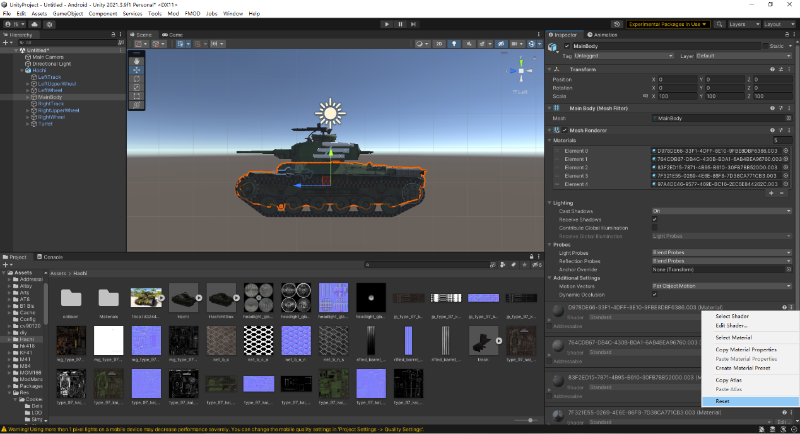
8. 给模型起名字 Naming the Model
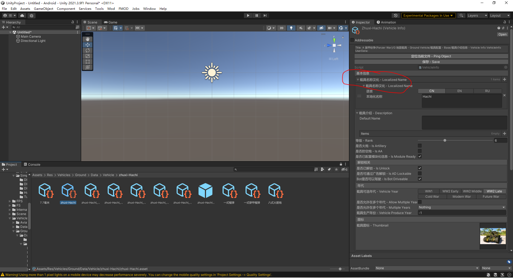
9. 多边形炮管变圆 Making a Faceted Gun Barrel Look Round
有时你所拿到模型它的炮管和其他一些部位是多边形的，你可以在blender中点击模型，然后右键平滑着色来让它变圆
Sometimes the model you get has a faceted gun barrel and other faceted parts. In Blender you can click the model and then right-click Shade Smooth to make it look round.
10. 多炮塔例子 A Multi-Turret Example
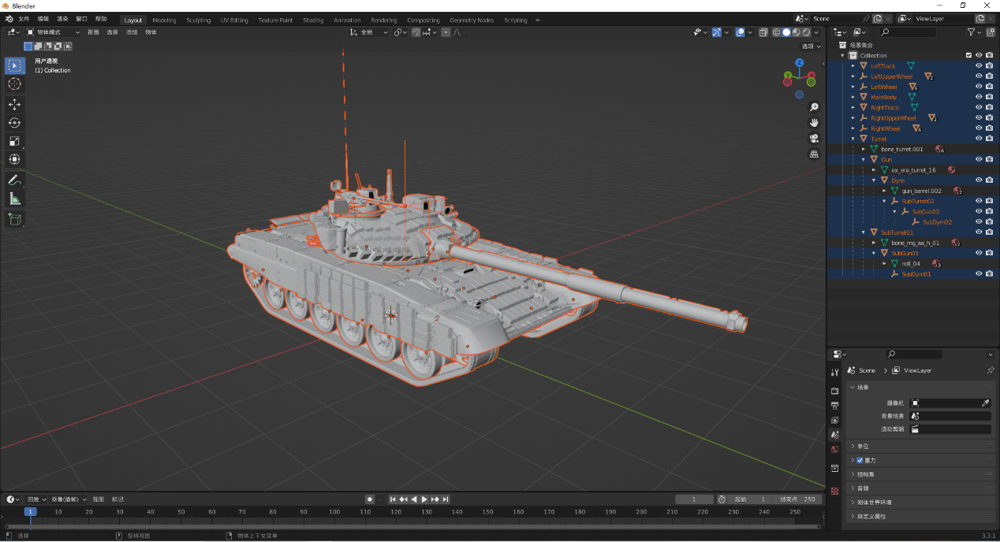
其中SubTurret02是炮塔顶部的机枪，我用空轴来作为它的dym
SubTurret02 is the machine gun on top of the turret; I used an empty as its dym.
而SubTurret01是共轴机枪，我将三个空轴叠加来作为共轴机枪，并套在Dym下，这使得它将同主炮一同移动，而你不需要设置其他多余的数据（如炮塔俯仰角，转速）
SubTurret01 is the coaxial machine gun. I stacked three empties to serve as the coaxial machine gun and nested them under Dym, which makes it move together with the main gun, so you do not have to set any extra data (such as turret elevation angles or traverse speed).
11. 配对节点和重力节点 Pairing Nodes and Gravity Nodes
重力节点意味着履带在该点会受到重力影响而自然下垂
A gravity node means that the track will sag naturally at that point under the influence of gravity.
而配对节点则能够使得上下履带随负重轮一同上下运动
A pairing node makes the upper and lower track move up and down together with the road wheels.
如下图使用
Use them as shown below.
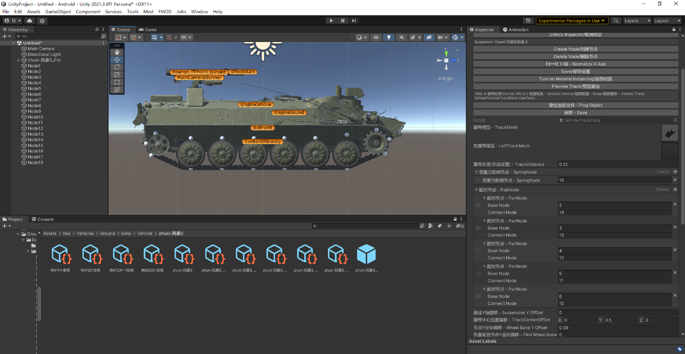
12. 如何解决模组启动停止时的猛烈磕头 How to Fix Violent Nose-Diving When the Mod Starts and Stops
一是将center of gravity摆放适中同时将其稍微下移（重心越高越不稳定），二是调整wheelcollider中右侧数据来调整摩擦
First, place the center of gravity in a moderate position and move it slightly downwards (the higher the center of gravity, the less stable the vehicle is). Second, adjust the values on the right side of the wheelcollider to tune friction.
详情请见此https://blog.csdn.net/weixin_43147385/article/details/124266796
See this article for details: https://blog.csdn.net/weixin_43147385/article/details/124266796
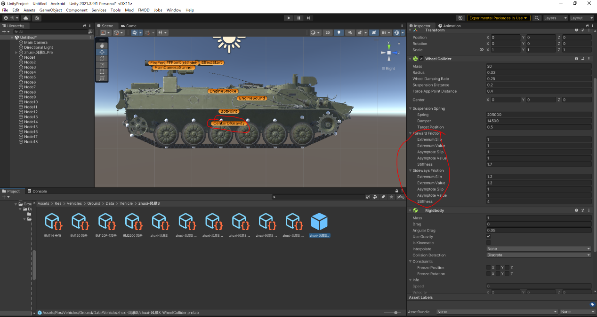